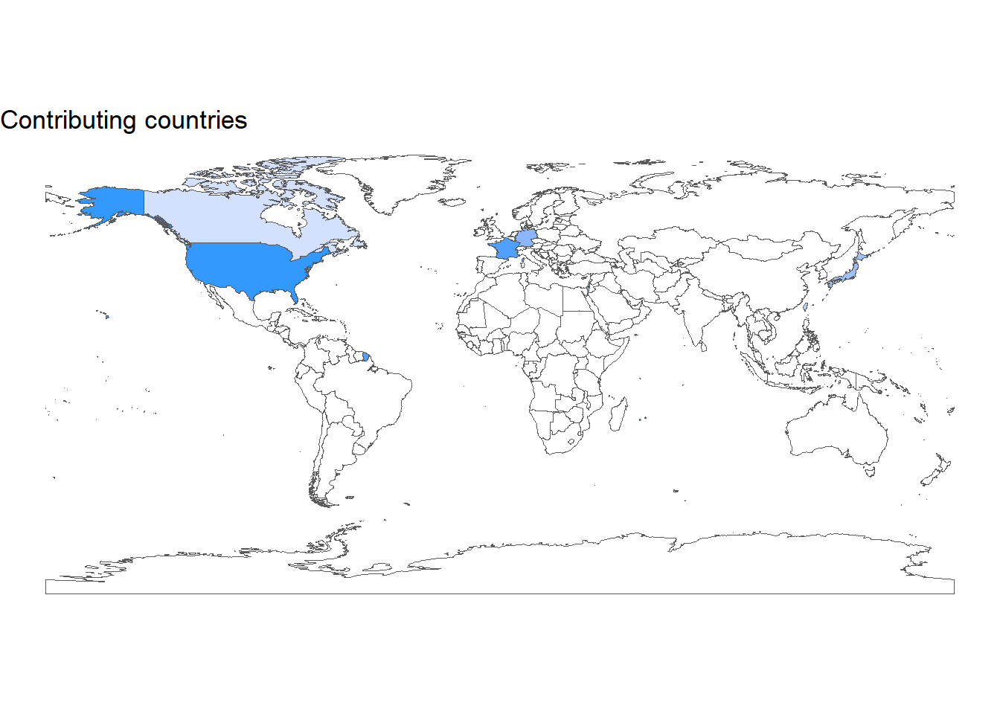

Chapter 2 Introducing the database
This is a VERY brief introduction. The database was created in 2018, and gather more than 700 cases of immune checkpoint inhibitors associated cardiovascular adverse reactions (as of September 2022). Cases are reported from all around the world, and most of them are myocarditis cases.
October 2022 update. It was decided to remove all non-myocarditis cases from the base. Some cases were removed after a careful semi-automated review, which also tracked duplicates.
If your not familiar with the Redcap data structure and how data can be exported, you should look at the Redcap Help & FAQ. We will not deal with these concepts here.

2.1 What is in the Redcap?
In the Redcap you may find an extensive characterization of the cases, including clinical work-up and outcomes. These features are grouped according to time points (baseline, index date, follow-up…) or critical exams (EKG, biopsy…) that are called instruments in Redcap. Each instrument is described in a separate chapter in this document.
2.2 Variables naming rules
Variable names are attributed according to standardized rules as follow:
- A variable name always starts by the instrument identifier (e.g.
p_for demographic data, see below Data structure), with the exception of datedate_and timeti_variables (see multi-instrument variables). - In case an instrument is subdivided into multiple instruments, the instrument identifier is followed by the subinstrument identifier (e.g.
ic_cafor index cardiotoxicity cancer treatment) - Calculated vars have the same name as manual vars, with an additional suffix
__c. - Free text vars have the same name as their branching logic displayer, with an additional suffix
__ft. - Descriptive vars have the same name as their branching logic displayer, with an additional suffix
__desc. Note that these vars do not contain any data and are not usually exported. - All variables names are lower case, with words separated by underscores (e.g. you will not see upper case vars such as
AGE_VAR). This is also known assnake_caseformat. - As much as possible, we use singular rather than plural in the names (e.g.
antimetaboliterather thanantimetabolites) - Variables with the
__oldsuffix are former versions that will be integrated in v3 of the database. They contain the same type of information, but often have different levels (e.g. an additional “missing” level).
We translate here a general description of the variables. To get a precise definition of a variable, you will be more inspired looking at the Redcap’s codebook.
Please note this document is NOT an exhaustive list of the variables in the redcap and is not intended to be.
2.3 Data structure
The Redcap instruments are:
| Instrument | Identifier | Description |
|---|---|---|
| Admin | [ad] | Identify the reporting source, the reporter, with mailing contact information. |
| Demographics | [p] | Patient demographics (age, sex…), medical history (including cardiovascular history), and medications. |
| Baseline EKG | [be] | If any, description of a baseline Electrocardiogram (prior to cardiotoxicity). |
| Previous line | [pl] | Features of prior anticancer treatments, including those of older cancers and the current cancer in prior lines of treatment. |
| Current line | [cl] | Features of the current line of anticancer treatment containing immunotherapy(ies). Also, features of the current cancer (actively treated). |
| Index cardiotoxicity | [ic] | All clinical work-up of the patient when presenting for cardiotoxicity. This is the main instrument. |
| Index EKG | [ie] | It is an instrument by itself, as it gathers one or several EKGs, hence there is a large quantity of data here. |
| Index hospitalization | [ih] | Features that occurred during the hospitalization that followed cardiotoxicity diagnosis. |
| Follow-up | [fu] | Long term outcomes. |
| Biology | [b | All biological features (transversal instrument) |
2.4 Multi-instrument variables
Sometime, an event can occur at different times. For example, a patient can experience death during its index hospitalization, or later in follow-up. To ensure a proper identification of events according to the research purpose, a separate chapter is dedicated to theses variables including timings.
2.5 Root variables
When a question can have multiple non-exclusive answers, the Field Type in Redcap is “checklist”.
For example: which alkylating agent(s) was(were) used?
Cisplatin
Carboplatin
Suppose the dots are checkboxes and you may select either of them.
In this case, Redcap creates subvariables in the data extraction. If the variable name is p_pl_alkylating_agent, then you will NOT find it in the extraction. You will have 2 subvariables named p_pl_alkylating_agent___1 and p_pl_alkylating_agent___2.
Root variables are those variables that are splitted into multiple subvariables, i.e. which have the Field Type argument “checkbox”.
You may want to merge back these variables together, to create a global variable: “Has the patient been treated with any alkylating agent?”.